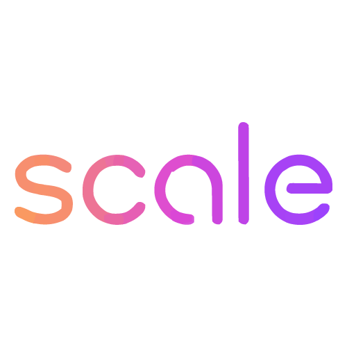
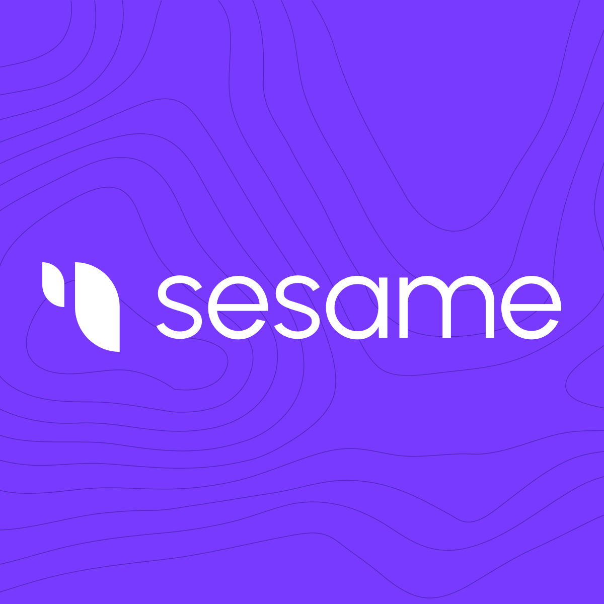

Open models that listen, understand, and reason about all sound
GAMMA Lab at the University of Maryland builds AI systems that reason deeply about speech, music, and the acoustic world — developing open benchmarks, models, and methods that advance the science of auditory intelligence.
Audio General Intelligence — the capacity of AI agents to deeply understand and reason about all types of auditory input, including speech, environmental sounds, and music — is crucial for enabling AI to interact seamlessly and naturally with our world.
Despite this importance, audio intelligence has traditionally lagged behind advancements in vision and language processing. This gap arises from significant challenges: limited datasets, the complexity of audio signals, and a shortage of advanced neural architectures and effective training methodologies tailored specifically for audio. Recent breakthroughs in Large Language Models have begun to transform the landscape — offering promising pathways to enhance foundational audio tasks like ASR, cross-modal retrieval, and audio captioning, while giving emergence to new tasks like complex Audio Question Answering.
At GAMMA Lab, our mission is to accelerate progress toward Audio General Intelligence through open and accessible innovation. Our flagship Audio Flamingo series — spanning GAMA, AF2, AF3, and now Audio Flamingo Next — features specialized architectures, optimized audio encoders, and meticulously curated alignment datasets that excel in complex reasoning, long-form audio understanding, and hallucination robustness across speech, sound, and music.
We are actively expanding beyond audio into full omni-modal intelligence. MMOU and EgoAVU push reasoning over long, complex video. Through open-source models, rigorous benchmarks like MMAU and MMOU, and synthetic data frameworks such as Synthio, GAMMA Lab fosters transparency and collaboration — ensuring audio and multimodal intelligence remains inclusive, impactful, and accessible worldwide.
 Meta
Meta Google
Google
Scale AI
Sesame Prof. Dinesh Manocha
Prof. Dinesh Manocha
 Sakshi
Sakshi
 Sreyan Ghosh
Sreyan Ghosh
 Sonal Kumar
Sonal Kumar
 Ashish Seth
Ashish Seth
 Nishit Anand
Nishit Anand